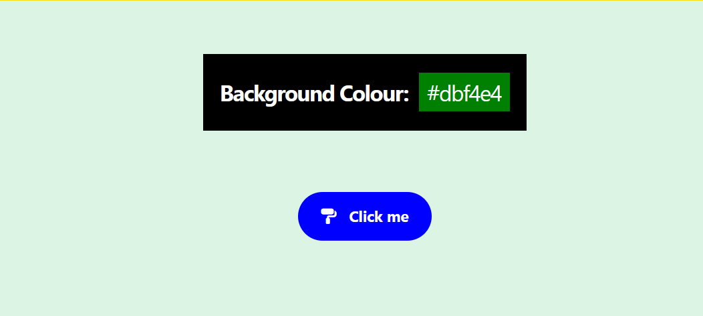

Project folder
In your 📁 /javascript-projects or whatever folder holds all your JavaScript projects, create a new subfolder named 📁 /colours.
In this subfolder, create a web page file named index.html.
Use this index.html file for the HTML, CSS and JavaScript code of this project.
Include your name and student ID in the <title> tag of your index.html file.
Git version control and Vercel
Make your 📁 /colours project folder a Git repo and push it to GitHub.
As you work on your project, commit your changes regularly and push them to GitHub. Use meaningful commit messages to describe your changes.
Your GitHub repo history should show at least three commits.
When your project is complete, import it into Vercel.
Overview
Your completed web page should:
- Display a button that the user can click to trigger a colour change.
- Generate a valid random hex colour code (in the format #RRGGBB) each time the button is clicked.
- Apply that colour as the background of a <section> element of the page.
- Display the current hex code on screen so the user can see the value.

Guidelines
Follow these directions:
- Use the following helper function to generate random numbers:
// Generate random number in range from 0 to max-1 function getRandomNumber(max) { return Math.floor(Math.random() * max); } - Store the 16 valid hex characters (0–9 and A–F) in an array.
- Use an .addEventListener() to attach a click event listener to the button.
- Write an arrow function as an argument to the event listener.
- Use a for loop inside the arrow function to build the six-character hex string one character at a time, based on a randomly generated array index value.
- Use the generated hex string to change the background colour of the <section> element.
- Display the current hex code in a box inside the <section> on screen.
- Apply some CSS styling to the hex code display box and the button.
- Centre-align the HTML elements in your web page, both vertically and horizontally.
- Use the Font Awesome library to add a suitable icon to the button.
- Add comments to your code.